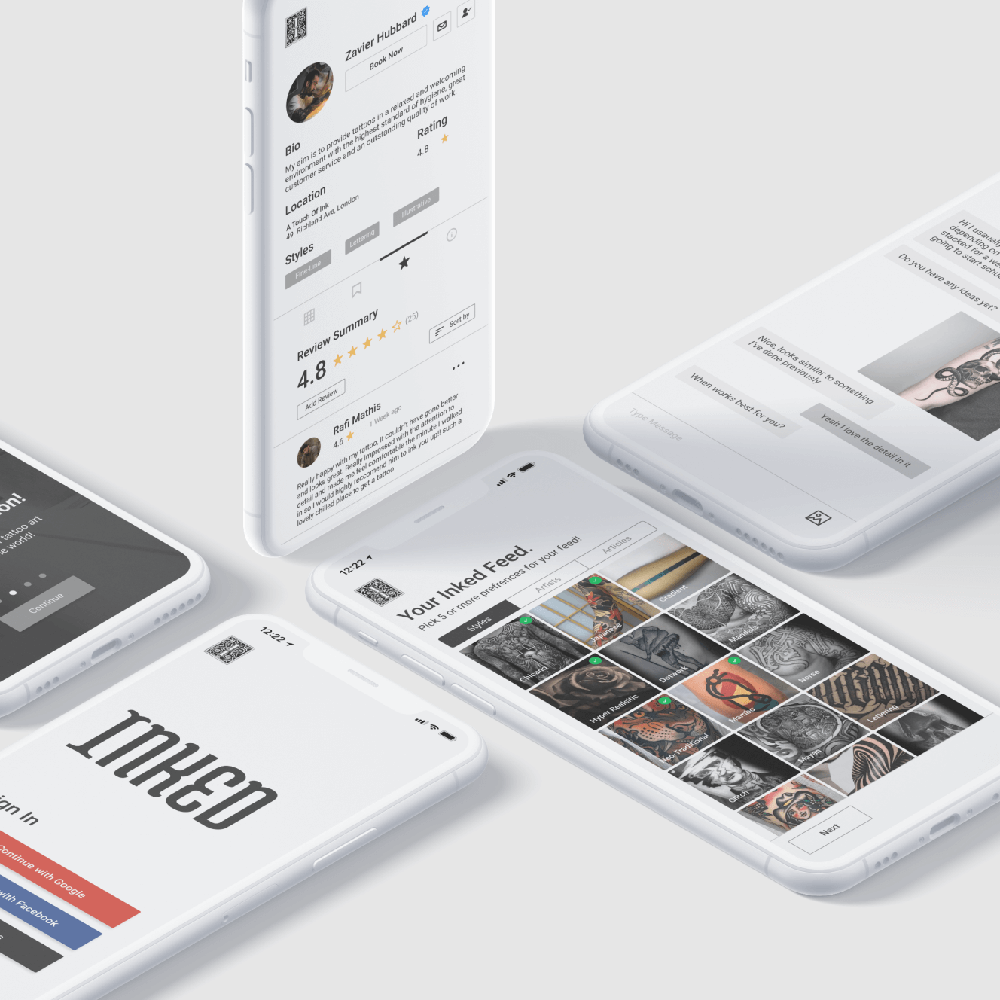

Inked
Project Brief
Role
UX & UI Design
Tools
Figma, Optimal Sort, Usability Hub
Duration
6 Months
Introduction
Inked is an international web-based application for both newbie & veteran tattoo enthusiasts, a digital guide to explore tattoo inspirations & find an artist that can accommodate and execute the chosen design. Deciding what tattoo to get can be an emotional journey, helping people find what they’re looking for in an effort to reduce regret and empower self-expression in a meaningful way is a core aim of this project.
Process
Background
Let's ask some questions
There are many processes people use when getting a tattoo, how can we best accommodate those who are very familiar with getting a tattoo and those who have never had one. What issues and concerns arise during the process of getting a tattoo, I asked myself a few key questions to better understand.
- “How do people explore inspiration for tattoos?”
- “How do people decide on an artist?”
- “Is getting a tattoo social? Or purely a personal experience?”
- “How might we improve the diversity of inspiration?”
- “How might we improve the experience of getting a tattoo?”
- “How might we reduce regret after getting a tattoo?”
Challenges
- 01. A search system that utilises categories and recommendations for discoverability.
- 02. Provide verified artists profiles with social features for open communication.
- 03. Eliminate barriers users face during the process of getting a tattoo.
- 04. Design an interface that purely focuses on tattoo art and culture content.
Competitors
Competitor Analysis
Inked has the potential to differentiate itself and improve on current shortcomings of these products by identifying key objectives, overall strategy, a SWOT and UX analysis of each product.
The insights gained from this research informed Inked’s business objectives, both to succeed in the market and meet user needs.
-
Business Goals
An all-in-one tattoo platform that enables users to search for tattoo inspiration, as well as talk with artists and book appointments. -
Target Market
Ages between 18-40, our target demographic often use mobile devices, and possibly already have a tattoo or looking to get one. -
Function Overview
Search tattoo inspiration, Talk with and book artists, Save & share inspirational designs. -
Oppurtunity
A complete user experience that champions artists and their work, giving users access to a global community to discuss and share ideas.
Users
Meet our primary user!
Wireframes
Low-Fidelity
Mid-Fidelity
Prtotype
Testing Usability
I aimed to test the learnability for new users interacting with the web application for the first time. Assess users' understanding of the app, whether navigation is intuitive, and if completing tasks can be more efficient.
Specific Goals
- Sign Up
- Search Artists
- Viewing Review
- Messaging
Disocvering Issues
These insights were brought to light in the usability testing, depending on the reactions/feedback to a certain feature or interaction determined the priority of the change.
-
Unclear Booking
Users stated they were unsure where they would actually request a booking. This was not a task but was pointed out when working through other tasks. -
Location & Rating
Artists location is not visible on their profile. Users mentioned the review rating should be visible on the entry of an artists profile. -
Sort & Filter
Users were unable to sort/filter reviews, users will have to scroll endlessly to find information that could be useful. -
Verification
Users would like to see if an artist is verified, they don't want to risk something as important as getting a tattoo with an inexperienced practitioner.
Final Designs
Conclusion
What's Next
This project gave me the opportunity to learn about UX, UI & product design. Working throughout the project from its inception to its completion was challenging but incredibly rewarding. Including, working through the process, discovering insights, implementing feedback & watching the design mature. If I were to return to this project there are areas I would like to improve upon, deeper account preferences when creating an account & looking to introduce varied content to engage users in the community of the tattoo world.